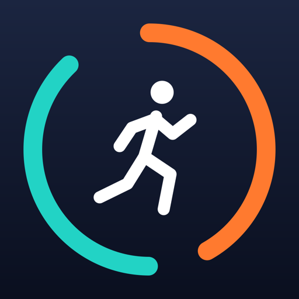

RunTimerIntervall-Timer für Lauf-Geh-Training auf iPhone und Apple Watch.
Wofür ist RunTimer?
Beim Lauf-Geh-Training wechselst du planmäßig zwischen kurzen Laufabschnitten und Gehpausen – etwa 2 Minuten laufen, 1 Minute gehen. So lassen sich auch längere Strecken entspannt und gelenkschonend bewältigen, ob du gerade mit dem Laufen beginnst, nach einer Pause wieder einsteigst oder einen langen Lauf bewusst gleichmäßig angehen möchtest.
RunTimer nimmt dir das Mitzählen ab: Du stellst dein Training auf dem iPhone ein, die Apple Watch führt dich mit Vibration und Sprachansagen durch jede Phase – du musst unterwegs nicht auf die Uhr schauen. Das Training wird als vollständiges Workout in Apple Health gespeichert.
Funktionen
Training nach deinen Vorgaben
- Warm-up, Intervalle, Cool-down: Lauf- und Gehzeit frei einstellbar, davor ein Warm-up und danach ein Cool-down.
- Feste Wiederholungen oder Ziel: eine bestimmte Anzahl an Intervallen – oder die Intervalle wiederholen sich, bis eine Zeit oder Strecke erreicht ist.
- Gesamtdauer wird vorab berechnet und während des Trainings heruntergezählt.
- Vorlagen: klassische Intervall-Vorlagen sowie eigene Vorlagen speichern, bearbeiten und direkt auf der Uhr auswählen.
Geführt durch jede Phase
- Vibration und Sprachansage bei jedem Wechsel: „Warm-up“, „Laufen“, „Gehen“, „Cool-down“.
- Countdown vor jedem Wechsel – „5, 4, 3, 2, 1“ als Ansage, die letzten drei Sekunden zusätzlich mit Vibration.
- Fortschritt: „Halbzeit“, „Noch zwei Intervalle“, „Letztes Intervall“.
- Kilometeransagen mit der Zeit für jeden vollen Kilometer.
- Alle Ansagen einzeln abschaltbar, Lautstärke einstellbar.
- Ansagen auf Deutsch oder Englisch – automatisch passend zur Sprache der Uhr oder fest eingestellt.
Zielbereich für Puls oder Pace
- Lege für die Laufintervalle einen Puls- oder Pace-Bereich fest.
- Liegst du 10 Sekunden außerhalb, sagt die Uhr „Zu schnell“, „Zu langsam“, „Puls hoch“ oder „Puls niedrig“ – mit einer leichten Richtungs-Vibration.
Automatische Pause
- Bleibst du stehen – etwa an einer Ampel –, pausiert das Training automatisch und läuft weiter, sobald du dich wieder bewegst.
- Die Erkennung nutzt Schritterkennung, GPS und Bewegungssensoren und funktioniert auch mit herabhängendem Arm.
Flexibel unterwegs
- Nächste Phase: Warm-up vorzeitig beenden oder die Intervalle abkürzen und direkt ins Cool-down wechseln – per Tipp oder Doppeltipp mit Daumen und Zeigefinger.
- Weiter aufzeichnen: Nach dem Ende des Programms läuft die Aufzeichnung weiter, bis du das Training beendest – so wird dein gesamter Trainingsumfang gespeichert.
- Ohne iPhone: Das Training läuft vollständig auf der Apple Watch.
- Musik im Griff: Die Seite „Jetzt läuft“ im Training steuert Musik oder Podcast – Wiedergabe, Titelwechsel und Lautstärke über die Digital Crown, ohne die App zu verlassen.
Auswertung
- Apple Health & Fitness: Herzfrequenz, Kalorien, Distanz, Pace und GPS-Route.
- Zusammenfassung auf Uhr und iPhone – mit Werten getrennt nach Lauf- und Gehphasen (Zeit, Ø Pace, Ø Puls).
- Live-Status auf dem iPhone während des Trainings – auch auf dem Sperrbildschirm und in der Dynamic Island: Phase, herunterzählende Restzeit, Intervall, Puls, Strecke und Trainingszeit.
- Trainingsdatei (TCX) für jedes gespeicherte Training – mit jeder Lauf- und Gehphase als eigener Runde, Puls und GPS-Route. Teilen, in Dateien sichern oder bei Trainingsplattformen wie Strava hochladen.
Automatischer Upload (optional)
- Direkt zu deiner Trainingsplattform: RunTimer kann jedes gespeicherte Training automatisch zu Intervals.icu, Tredict oder Runalyze hochladen – mit allen Lauf- und Gehphasen als eigene Runden, Puls und GPS-Route.
- Einfach eingerichtet: Intervals.icu verbindest du mit deinem Konto-Login, für Tredict und Runalyze hinterlegst du ein persönliches API-Token. RunTimer erhält nie dein Passwort.
- Im Hintergrund: Sobald die Trainingsdatei das iPhone erreicht, wird sie übertragen – auch über mobile Daten und mit automatischer Wiederholung, falls die Verbindung kurz fehlt.
- Freiwillig: Jeder Dienst ist standardmäßig aus und wird einzeln unter Verbindungen eingeschaltet. Hochgeladen werden nur Trainings ab der Aktivierung.
Datenschutz
- Kein eigener Server, keine Werbung, kein Tracking. Deine Daten bleiben auf iPhone, Apple Watch und in Apple Health – außer du schaltest selbst einen Upload zu einer Trainingsplattform ein. Mehr in der Datenschutzerklärung.
Häufige Fragen
Was brauche ich für RunTimer?
Ein iPhone mit iOS 26.2 oder neuer und eine damit gekoppelte Apple Watch mit watchOS 26.2 oder neuer. Die Intervalle stellst du auf dem iPhone oder direkt auf der Uhr ein; das Training selbst läuft auf der Apple Watch.
Kann ich ein Training auch nur mit dem iPhone aufzeichnen?
Nein. Das Training wird ausschließlich auf der Apple Watch aufgezeichnet – dort laufen Intervall-Timer, Ansagen, Pulsmessung und Auto-Pause. Ohne Apple Watch kannst du RunTimer nicht für ein Training nutzen. Das iPhone dient zum Einstellen der Intervalle und Vorlagen und zeigt während des Trainings den Live-Status und danach die Zusammenfassung.
Muss ich das iPhone beim Laufen mitnehmen?
Nein. Das Training läuft vollständig auf der Uhr, inklusive GPS-Route, Puls und Ansagen. Mit iPhone in der Nähe siehst du dort zusätzlich den Live-Status.
Warum fragt die App nach Health, Standort und Bewegung?
Health für Puls, Kalorien und Distanz während des Trainings sowie zum Speichern des Workouts. Standort für Strecke, Pace und GPS-Route. Bewegung & Fitness für die Schritterkennung der automatischen Pause. Alle Daten bleiben auf deinen Geräten, solange du keinen optionalen Upload einschaltest.
Die automatische Pause reagiert nicht wie erwartet – was kann ich tun?
Prüfe, ob Standort und „Bewegung & Fitness“ für RunTimer erlaubt sind (iPhone: Einstellungen → Datenschutz & Sicherheit). Ohne GPS-Empfang, etwa in Gebäuden, stützt sich die Erkennung nur auf Schritte und Bewegung und reagiert etwas langsamer. Während einer automatischen Pause kannst du jederzeit mit ▶︎ selbst weitermachen.
Wo finde ich meine Trainings?
In der Fitness-App und in der Health-App auf dem iPhone – wie Trainings aus der Trainings-App von Apple, inklusive Karte der Strecke.
Wie lade ich Trainings automatisch zu Intervals.icu, Tredict oder Runalyze hoch?
Öffne in der iPhone-App Verbindungen und wähle den Dienst. Bei Intervals.icu tippst du auf Mit Intervals.icu verbinden und meldest dich dort an. Bei Tredict und Runalyze erstellst du in den Einstellungen des Dienstes ein persönliches API-Token (Tredict: Berechtigung activityWrite; Runalyze: activity_push mit Ablaufdatum) und fügst es in RunTimer ein. Schalte anschließend Trainings automatisch hochladen ein. Den Stand siehst du unter Übertragungsstatus.
Hinweis: Tredict-Tokens bleiben nur aktiv, wenn du dich mindestens alle zehn Tage bei Tredict anmeldest; Runalyze-Tokens laufen zum gewählten Datum ab und müssen dann ersetzt werden.
Wie lade ich ein Training manuell hoch, etwa zu Strava?
Nach jedem gespeicherten Training überträgt die Uhr eine TCX-Datei auf dein iPhone. Du findest sie in der iPhone-App unter Trainingsdateien. Tippe auf das Teilen-Symbol, sichere die Datei in Dateien oder sende sie dir per Mail, und lade sie dann auf der Website der Plattform über „Upload“ bzw. „Datei hochladen“ hoch. Jede Lauf- und Gehphase erscheint dort als eigene Runde.
Wie bekomme ich das Training auf den Sperrbildschirm des iPhones?
Öffne RunTimer auf dem iPhone, bevor du das Training auf der Uhr startest – oder einmal kurz währenddessen. Dann erscheint der Live-Status auf dem Sperrbildschirm und in der Dynamic Island und bleibt bis zum Trainingsende aktuell, auch bei gesperrtem iPhone. iOS erlaubt den Start einer solchen Live-Aktivität nur, solange die App geöffnet ist. Abschalten lässt sie sich in den iOS-Einstellungen unter RunTimer → Live-Aktivitäten.
Kann RunTimer meine Playlist automatisch starten?
Nein – watchOS erlaubt das nur Apples eigener Trainings-App. Starte deine Playlist vor dem Training in der Musik-App der Uhr oder per Siri („Spiel meine Lauf-Playlist“). Im Training steuerst du sie dann auf der Seite „Jetzt läuft“ (mit der Digital Crown ganz nach unten blättern); ▶︎ setzt die zuletzt gehörte Wiedergabe fort. Die Sprachansagen senken die Musik kurz ab.
Wie erreiche ich den Entwickler?
Per E-Mail an runtimerapp@tuta.com. Während der Testphase gern auch direkt über die TestFlight-App.